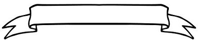

MENU UTAMA |
SELAMAT DATANG
Selamat datang di halaman website pribadi statis saya, ini adalah sebuah karya yg masih sangat sederhana di dalam dunia pemograman berbasis web Saya tahu bahwa saya tidak sempurna, karena kesempurnaan hanya milik-Nya. Maka dari itu saya minta jika ada saran ataupun kritik dari teman - teman langsung aja diungkapken dan insyaallah akan saya terima dengan lapang dada walaupun kritikan teman-teman semua ada yang positif dan negatif. Toh kita manusia, makhluk sosial jadi harus saling lontong melontong eh maksudnya tolong - menolong :P. Salam perdamaian dan terimakasih
Rizal_VanDMello_Larasaty |
|  |
|